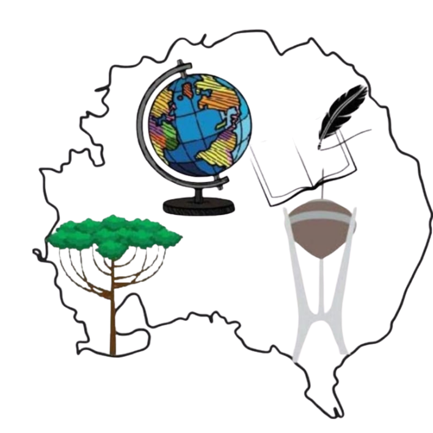
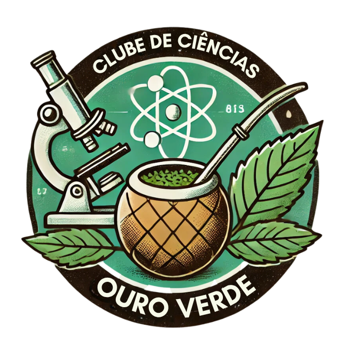

História
Conheça a trajetória da erva-mate, sua importância regional e a história do Clube Ouro Verde.
Acessar página
Clube de Ciências
Colégio Estadual do Campo Professor Eugênio de Almeida
Ensino Fundamental, Médio e Técnico
Distrito de Fluviópolis — São Mateus do Sul — Paraná

Pesquisa, educação e protagonismo estudantil
Um espaço de investigação científica, inovação, valorização da erva-mate, sustentabilidade e desenvolvimento de projetos realizados pelos estudantes.
O Clube de Ciências Ouro Verde pertence ao Colégio Estadual do Campo Professor Eugênio de Almeida, localizado no Distrito de Fluviópolis, em São Mateus do Sul, Paraná. Nossas atividades aproximam a ciência da realidade da comunidade escolar por meio de pesquisas, experimentos, tecnologia e ações de educação ambiental.
Explore o portal
Acesse conteúdos produzidos pelos estudantes e conheça a história, os projetos e os estudos desenvolvidos pelo clube.
Conheça a trajetória da erva-mate, sua importância regional e a história do Clube Ouro Verde.
Acessar páginaDescubra narrativas, tradições e elementos culturais relacionados à erva-mate e à região.
Acessar páginaAprenda sobre escolha do local, preparo do solo, plantio, manejo e cuidados com a erva-mate.
Acessar páginaConheça as etapas de coleta de sementes, germinação, desenvolvimento e produção de mudas.
Acessar páginaEncontre receitas desenvolvidas com erva-mate e conheça novas formas de aproveitar a planta.
Acessar páginaAcompanhe pesquisas, experiências e soluções científicas desenvolvidas pelos estudantes.
Acessar páginaVeja registros das atividades, encontros, experimentos, visitas e eventos do clube.
Acessar páginaConfira novidades, eventos, resultados, participações e conquistas do Clube Ouro Verde.
Acessar páginaNossa instituição
O Colégio Estadual do Campo Professor Eugênio de Almeida atende estudantes do Ensino Fundamental, Médio e Técnico e valoriza uma educação conectada à realidade local, à cultura regional e ao desenvolvimento sustentável.
Distrito de Fluviópolis, São Mateus do Sul
Ensino Fundamental, Médio e Técnico
Pesquisa, tecnologia e sustentabilidade